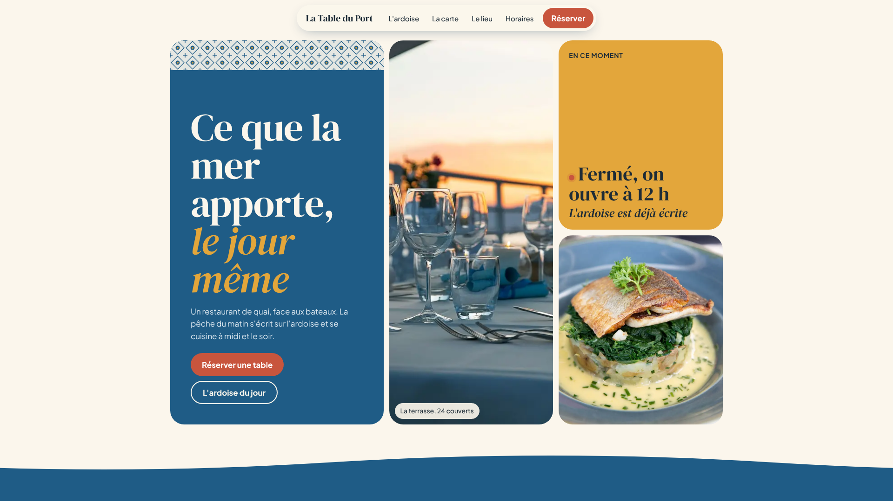
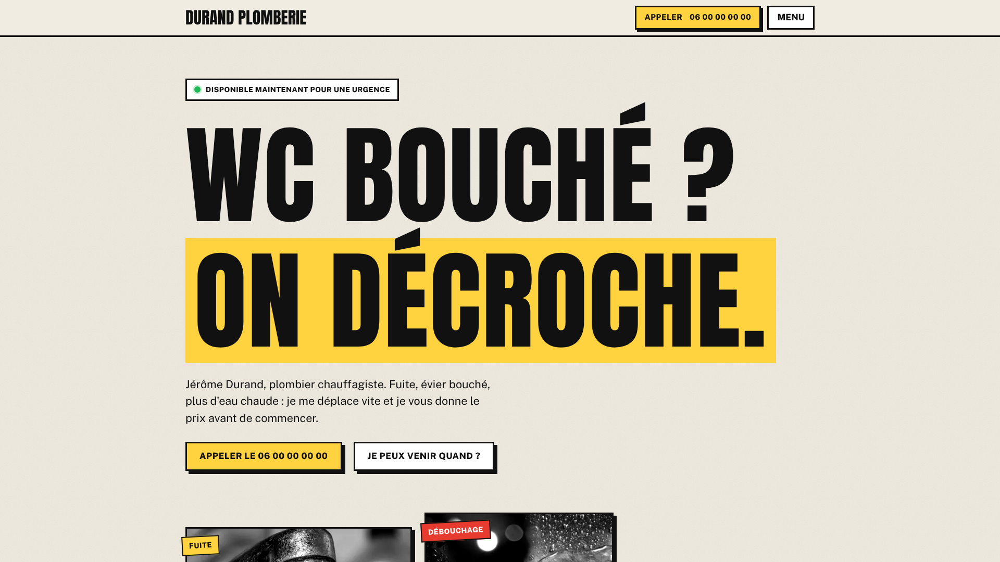
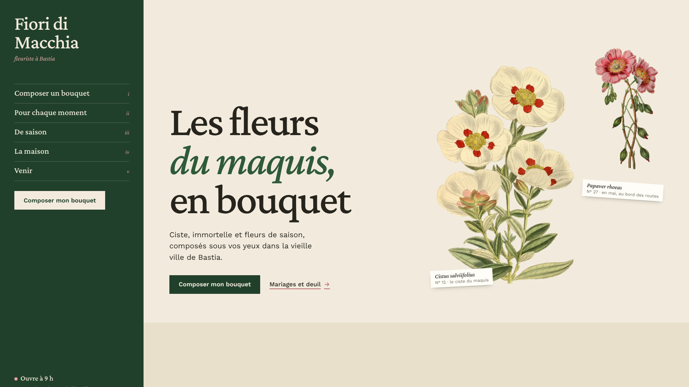

La nuit, votre boutique est fermée.
Votre site, lui, reste ouvert.
Saitora
Sites vitrines sur mesure pour les restaurants, les artisans et les commerces.
Votre vitrine,
ouverte jour
et nuit.



Fait à votre image. En ligne en trois semaines.